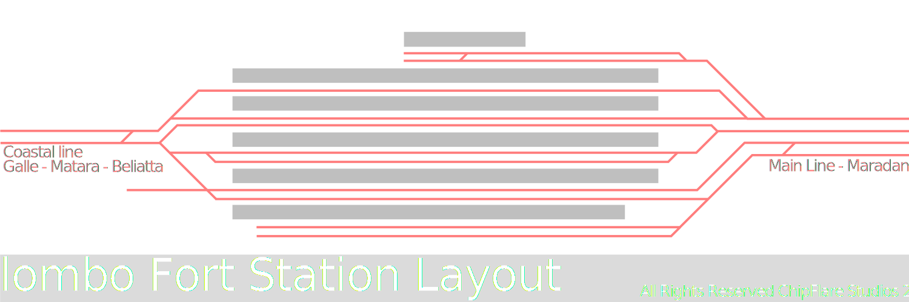
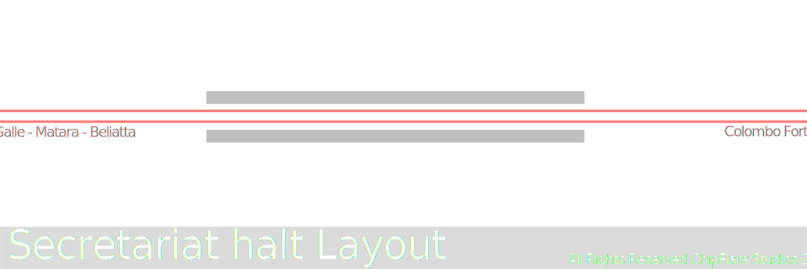
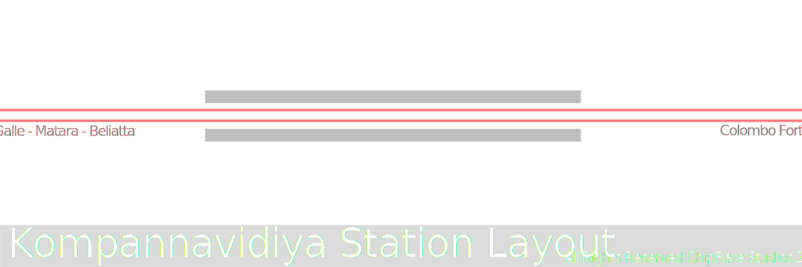
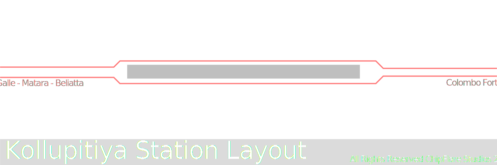

Coastal line is a railway line in Sri Lanka that connects Colombo and major cities like Galle and Matara, recently extended to beliatta, being the first railway like to be built after the independence of the country. [Wikipedia]
List of Stations
Colombo fort
Colombo fort is a major railway station in Sri Lanka as it is the terminous of most trains in the country. This is located at the center of the Colombo City next to Pettah and Colombo Fort.
Secretariat Halt (Mahalekam Karyalaya)
Small station with basic facilities. Some trains avoid this station and mostly used by local commuters.

Slave Island (Kompannavidiya)
Small station with basic facilities. Mostly used by locals reaching the nearby offices.

Kollupitiya
Small station with basic facilities. Popular among locals for its sunset views and proximity to attractions such as Galle Face. Train journey from Kallupitiya to Dehawala is popular among Chinese tourist groups.
